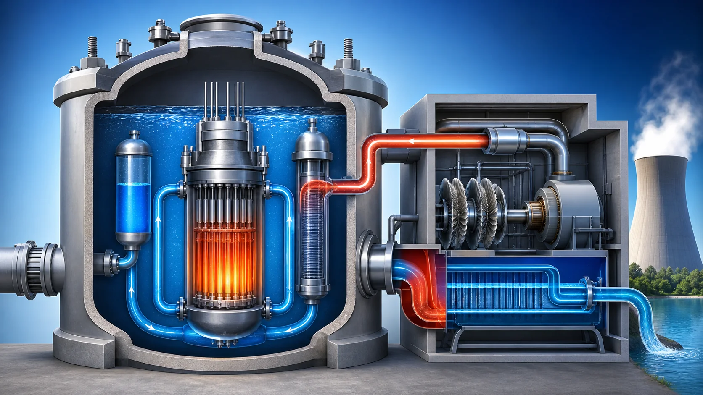
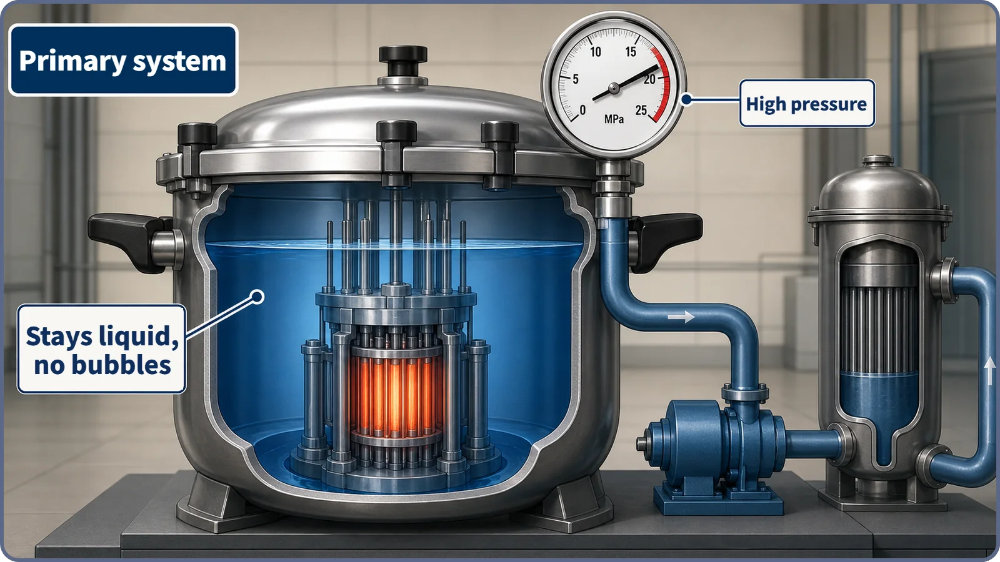
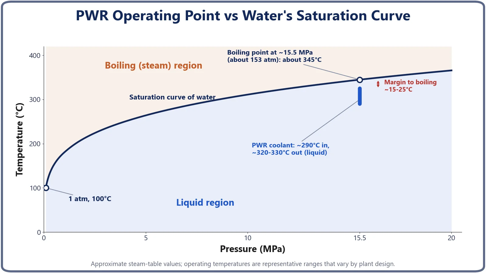

Heat Transfer & Thermal Hydraulics · 140
Turning the Whole Reactor into a Pressure Cooker — Why Pressurized Water Reactors Run at High Pressure
By raising the boiling point well above the coolant's roughly 300°C operating temperature, high pressure keeps a PWR's core free of boiling.

A pressurized water reactor holds its whole primary system at around 15.5 MPa so that its coolant, heated to roughly 290 to 330°C, never boils in the core. At that pressure water's boiling point rises to about 345°C. Pressure doesn't cool the water; it moves the boiling line well above the operating temperature, keeping heat transfer, flow and moderation stable, at a pressure chosen as a compromise between margin and equipment cost.
Pressure, applied on purpose
Remember the link between pressure and boiling point we looked at earlier? When pressure rises, the temperature at which a liquid boils rises with it. That's why rice comes out underdone on a mountaintop, and why water in a pressure cooker can pass 100°C without boiling. One machine uses this principle more boldly than any other, and at power-plant scale: the pressurized water reactor (PWR).
The name gives it away. "Pressurized" means exactly that: pressure is applied. So how much pressure does a PWR apply, and why does it need so much?
It's hot, so why work so hard to keep it from boiling?
Fission in the reactor core pours out an enormous amount of heat, and the job of carrying that heat away falls to the coolant, which in a light water reactor is simply water. Here's a natural question: the water is hot anyway, so why not just let it boil into steam? Hot steam or hot water, isn't heat transport the same either way?
In practice, it isn't. Liquid water carries far more heat, far more efficiently, than steam. Water flowing as a single liquid (single-phase flow) behaves predictably and is easy to manage, whereas a mix of water and bubbles tends to flow unstably and sits closer to the boundary where heat transfer can suddenly worsen (the critical heat flux, or CHF, discussed earlier). On top of that, in a light water reactor the water is not only the coolant but also the moderator that slows neutrons down. If the coolant boiled widely throughout the core, its density as a moderator would become uneven, making the core harder to operate predictably. (This is one of several reasons, not the only one.)
So the PWR's strategy is very simple: never boil in the core. The water gets hot, but it leaves the core as a liquid.
Putting the whole primary system inside a giant pressure cooker
This is where the pressure–boiling point principle comes in. There's only one way to keep water from boiling in the core: push its boiling point above the temperature the water actually reaches. And to do that, you raise the pressure.
A PWR turns its entire primary system, the reactor, coolant and piping, into something like a giant pressure cooker, holding the coolant at around 15.5 megapascals (MPa): roughly 150 to 155 bar, or more than about 150 times atmospheric pressure. At 1 atmosphere water boils at 100°C, but at this pressure its boiling point soars to about 345°C. Meanwhile, the coolant only warms from about 290°C to roughly 320 to 330°C as it passes through the core. Even at the hottest point, it runs about 15 to 25 degrees below the boiling point. (Core inlet and outlet temperatures and this margin vary by plant model and design generation; these are representative ranges.)

One misunderstanding is worth heading off: pressure does not cool the water. The water is still above 300°C, as fiercely hot as ever. Pressure does only one thing: it pushes the dividing line between "this water can stay liquid at this temperature" and "this water has to boil," the boiling point itself, far upward. The line moved; the heat the water actually carries didn't shrink at all.
In numbers: the operating point must always sit below the boiling point
Put pressure on the horizontal axis and temperature on the vertical axis, and draw water's saturation curve (the temperature at which water starts to boil at each pressure). At any given pressure, points below the curve, cooler than the boiling temperature, are liquid; points above it, hotter than the boiling temperature, are where water boils into steam.
Mark the PWR's operating conditions on this graph, around 15.5 MPa and 290 to 330°C, and they sit clearly below the curve, in the liquid region. The designers didn't pick the pressure at random; they set it so the operating temperature never crosses this curve.

So why around 150 atmospheres?
Raise the pressure without limit and the margin grows, but the piping, pressure vessel, steam generators and the rest of the system would have to be made of much thicker, stronger material, sending manufacturing difficulty and cost soaring. So the actual design value is a compromise: enough margin that water boils nowhere in the core, without making the whole system excessively heavy and expensive. About 15.5 MPa is the representative value that came out of that compromise and has been widely adopted across generations of commercial PWRs.
How is this different from the pressurizer story? And what about BWRs?
Earlier we met the pressurizer, the component that actually creates this pressure and fine-tunes it. The two are easy to confuse: that story was "what device creates and controls the pressure," while this one is "why aim for such a high pressure in the first place," a step further back in the design philosophy. Means versus purpose.
Interestingly, another light water reactor took the opposite road. The boiling water reactor (BWR) keeps its pressure relatively low and is deliberately designed so the coolant actually boils in the core to make steam. "Hold it back from boiling, or let it boil?" The two reactor types chose different answers, a story for another time.
Common misconceptions
"High pressure makes the reactor more dangerous." High pressure in itself doesn't mean danger. It is a deliberate design condition for keeping the coolant stably liquid, and the pressure vessel, piping and the rest of the system are designed and verified with the thickness and materials to withstand it.
"PWRs use some special water that doesn't boil." It's the same water. At 1 atmosphere it boils at 100°C. In a PWR it stays liquid above 300°C only because the pressure has pushed the boiling point above the operating temperature.
"Both PWRs and BWRs make steam in the core." No. A PWR is designed not to make steam in the core; steam is produced separately, outside the core, in the steam generators. Making steam in the core is the BWR's trait.
The short version
- A PWR holds its entire primary system at around 15.5 MPa (about 150 atmospheres or more), so the coolant carries heat as a liquid at around 300°C without boiling.
- Pressure doesn't cool the water; it pushes the upper temperature limit for staying liquid (the boiling point, about 345°C) well above the operating temperature.
- Keeping a single liquid phase makes heat transfer and flow stable and keeps the water's moderator density predictable.
- The pressure is not raised without limit; it is a compromise between margin against boiling and the cost and difficulty of building the equipment.
- How the pressure is produced and controlled (the pressurizer) and why it is needed (this article) are different questions, and the BWR does the opposite, putting boiling in the core to use.